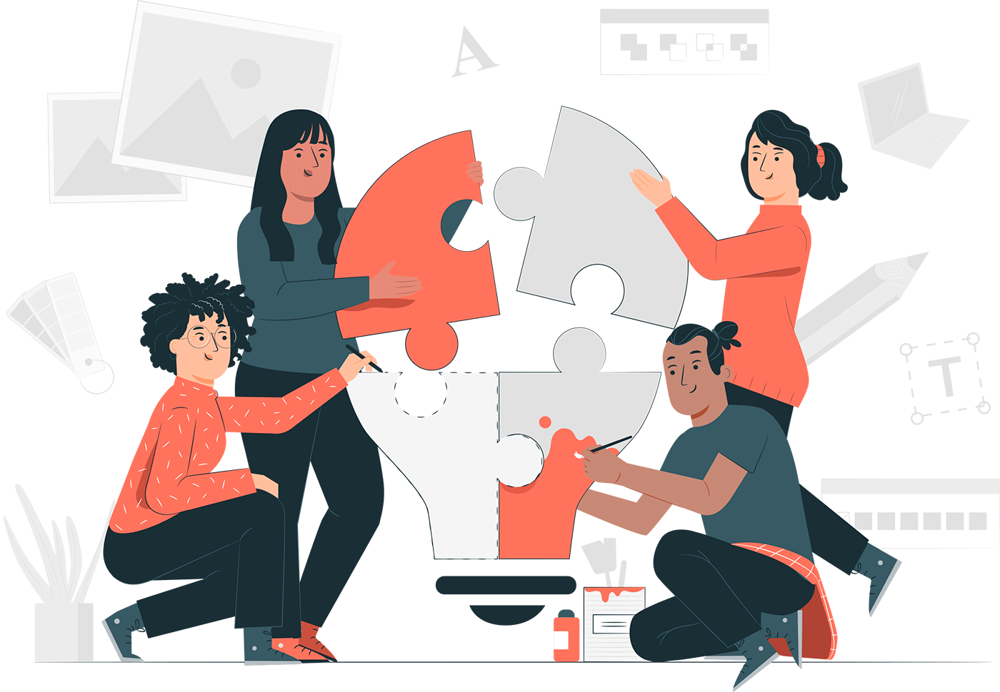

Новичок в команде -
рекомендации по адаптациисоветы по адаптации
Адаптация нового работника – важный процесс, который во многом определяет, насколько успешным и результативным будет сотрудник на новом месте. При этом руководители часто недооценивают значимость правильной адаптации новичка, считая, что «влиться» в коллектив и начать работать с полной отдачей - задача самого сотрудника. Существует немало примеров, когда компании теряли ценных и перспективных специалистов в первые месяцы их работы из-за ошибок, допущенных в процессе адаптации.
Для того, чтобы помочь новичку легко и быстро адаптироваться к новым условиям работы и стать «своим» в коллективе, мы составили список простых и полезных рекомендаций. Используйте их в работе и позитивные результаты не заставят себя ждать!
1. Открытость и доброжелательность
С первых дней работы закладывается фундамент отношений нового сотрудника с коллегами. Учитывая, что качество взаимоотношений в коллективе влияет на результативность работы всего подразделения, руководителю важно заранее подготовить команду к приходу новичка.
В период адаптации коллегам особенно важно проявить максимум открытости и доброжелательности по отношению к новичку, быть готовым к диалогу и оказанию поддержки. Однако на практике добиться от работников подобного отношения бывает непросто.
Некоторые сотрудники первое время стараются держаться отстраненно, занимая выжидательную или критическую позицию по отношению к новому коллеге, что может помешать выстраиванию конструктивных рабочих отношений и создать напряжение в коллективе. Во многом это обусловлено естественной реакцией человека на изменение привычной обстановки и появление незнакомца среди «своих».
Поддержка новичка со стороны коллег - важный шаг для успешной адаптации
Стоит помнить, что адаптация – это взаимный процесс, новичок привыкает к коллективу, а коллектив привыкает к новичку. Зная это, руководителю подразделения (самостоятельно или совместно с HR’ом компании) полезно провести предварительную беседу с подчиненными и обсудить выход в отдел нового сотрудника. Расскажите о том, почему в команде пополнение (замена ушедшему сотруднику, увеличение объёма работ, новое направление деятельности и пр.), какие задачи будет решать новичок, в чём будет его зона ответственности, изменится ли функционал остальных сотрудников и т.п. При необходимости вы также можете провести индивидуальные беседы с негативно настроенными подчиненными.
2. Вопросы и ответы
Новое место, новая работа, новые правила – все это вызывает у новичка массу вопросов, главные из которых: «Почему?», «Зачем?», «Где?» и «Как?». Подобные вопросы чаще всего звучат от нового сотрудника в первые месяцы работы. Это совершенно нормально, чем больше вопросов задаст новичок вначале и чем больше понятных ответов он на них получит, тем проще и эффективнее будет складываться ваша совместная работа в будущем.
Иногда большое количество вопросов со стороны новичка вызывает недовольство у некоторых коллег. Постарайтесь убедить их проявить терпение и понимание в сложившейся ситуации, попросите помочь новому сотруднику как можно быстрее разобраться в неясных рабочих моментах.
Поощряйте новичка задавать вопросы! Многие люди полагают, что чем больше вопросов они задают, тем глупее выглядят в глазах окружающих. Это распространенная ошибка, которая усложняет процесс адаптации. Помните и постарайтесь донести до новичка: не задает вопросов тот, кому абсолютно все понятно (что на практике – большая редкость), либо тот, кому ничего не понятно, но он не решается спросить.
Вопросы нового сотрудника - неотъемлемая часть его адаптации
Оцените вопросы новичка
Исходя из того, какие вопросы задает сотрудник, можно достаточно точно определить уровень его квалификации и профессионализма. Это, в свою очередь, поможет вам сформировать объективное мнение о компетентности и потенциале новичка, чтобы впоследствии принять верное решение по итогам испытательного срока.
3. От простого к сложному
Ставя перед новичком задачу, руководителю полезно придерживаться принципа «от простого к сложному». Следует помнить, что даже квалифицированному работнику требуется время для освоения новых должностных обязанностей, адаптации в коллективе, привыканию к условиям труда и корпоративной культуре. Поэтому, если с самых первых дней перед новым сотрудником ставятся сложные, амбициозные цели и задачи, это может лишь усилить стресс, привести к перенапряжению и отрицательно сказаться на конечном результате работы.
Вместо практики «проверки на прочность в боевых условиях»
целесообразно применять поэтапное усложнение рабочих задач и
наращивание объёмов работы
Рекомендация: составьте для нового сотрудника список рабочих задач, сложность которых постепенно возрастает. Не переходите к следующей задаче, пока новичок не выполнит предыдущую. Так вы не только повысите эффективность адаптации, но и сможете оценить, с чем сотрудник справляется сравнительно легко, а что вызывает у него затруднения.
4. Мотивационная поддержка
В период испытательного срока руководитель (или наставник) должны грамотно использовать инструменты мотивации нового сотрудника. Общий принцип: «Хвалить нужно, перехваливать – опасно». Поощрение должно быть соразмерно достигнутому успеху.
Похвала за успешно выполненную задачу, даже не очень высокой сложности, для новичка является сильным стимулирующим фактором, так как в первые недели ему особенно важно убедиться, что работа выполняется надлежащим образом и соответствует ожиданиям руководства.
Если воспринимать успехи нового сотрудника как норму и никак не отмечать их, работник гораздо дольше будет преодолевать внутреннюю неуверенность («всё ли я делаю правильно?») и избавляться от страха совершить ошибку (существует даже специальный термин - «ошибкобоязнь», которая отрицательно влияет на качество и результативность работы).
Также необходимо поддерживать новичка в случае совершения им ошибок, дав ему понять, что это совершенно нормально в первое время и свидетельствует о том, что сотрудник осваивает свою область работы, привыкая к принятым правилам и стандартам. При этом полезно донести до новичка, что «ошибаться можно, главное – не повторять одну и ту же ошибку дважды».
Мотивационная поддержка помогает новичку почувствовать уверенность в себе
Соблюдайте меру!
Помните, если перехвалить новичка, это может привести к переоценке сотрудником своих возможностей и увеличит риск совершения им критических ошибок в работе. Кроме этого подобное отношение к новичку практически наверняка вызовет негативное отношению со стороны остальных коллег, что осложнит их отношения в будущем.
5. Вовлечение в командную работу
В первое время не оставляйте новичка одного, активно включайте его в командную работу, однако постарайтесь при этом избежать распространенной ошибки.
Многие руководители поручают новичку задачи, которые требуют от него проявления инициативы в общении с коллегами. Это, безусловно, очень полезно, но в разумных объёмах, иначе вскоре вы рискуете услышать от своих подчиненных, что «этот новенький опять приставал к нам со своими вопросами!». Чтобы исключить подобный сценарий, поручите остальным сотрудникам задачи, которые потребуют от них привлечения новичка к совместной работе. Например, сбор данных для отчёта, подготовка материалов к встрече с заказчиком и пр. В этом случае совместная работа станет общей задачей, в которую новичок будет вовлечен вместе с остальными.

Выполнение общих задач - лучший способ вовлечь новичка в командную работу
6. Право голоса
Поначалу большинство новичков опасаются высказывать собственное мнение, чтобы не показаться некомпетентными или нетактичными. Это вполне объяснимо – сотруднику необходимо привыкнуть к принятым нормам и правилам общения. Вместе с тем, нужно дать понять сотруднику, что его мнение важно для компании уже сейчас, а не через 1, 3 или 6 месяцев, когда он, наконец решит, что обрёл право голоса.
Начните с простых вещей – идеи относительно оформления презентации в Power Point, помощи в составлении коммерческого предложения или в выборе темы для новостной рассылки клиентам. При этом избегайте излишнего давления на сотрудника, не выпытывайте его мнения во что бы то ни стало «здесь и сейчас». Иногда достаточно просто показать свою открытость его предложениям, чтобы сотрудник почувствовал готовность поделиться своими идеями.
Однако бывает и обратная ситуация, когда новичок старается высказать свое мнение по любому вопросу (тем самым пытаясь показать свою нужность и значимость). Столкнувшись с повышенной инициативностью сотрудника, прежде всего, отметьте его энтузиазм и готовность предлагать новые, оригинальные идеи. После чего акцентируйте внимание новичка на том, что в его работе вы больше всего цените качество предложений, а не их количество. Порекомендуйте сотруднику перед тем, как озвучить свою идею, предварительно просчитать её «стоимость» и целесообразность. Это поможет сохранить инициативность сотрудника и повысит продуктивность его действий.
Автор материала: Беспалов Игорь Александрович ©
Несомненно, это далеко не полный перечень ситуаций, которые могут возникнуть в процессе адаптации сотрудника, однако мы уверены, что приведённые рекомендации помогут вам избежать большинства распространенных ошибок и помочь новичку стать успешным сотрудником!
Воспользуйтесь нашими обучающими материалами, чтобы повысить эффективность адаптации новых сотрудников. Мы всегда рады помочь нашим клиентам и покупателям при возникновении вопросов. В течение 6 месяцев после приобретения наших материалов консультации предоставляются бесплатно.
Вы можете заказать услугу по разработке программы адаптации сотрудников вашей организации или самостоятельно освоить полезные технологии, используя наши обучающие материалы:
наверх
наверх ▲